3D scanning and 3D printing
Below you will find a detailed description of the project process.
In this project the objective was to work with 3D scanning software and 3D printers. I decided to 3D scan and 3D print the whole head of my friend.
I started by taking pictures of my friends face from all angles. To avoid geting disturbances in the model caused by him moving a little bit I used the burst photo option on my phone. This allowed me to take over 300 pictures of him in under 30 seconds.
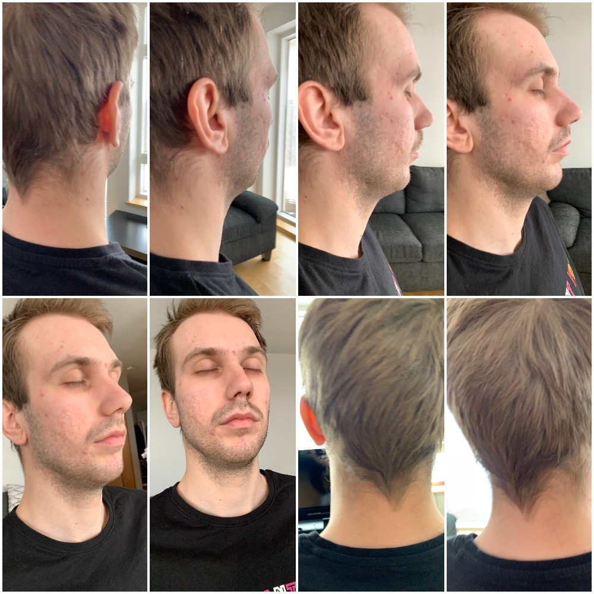I then uploaded the pictures to my computer. To create the 3D model from the images I used Autodesk Recap Photo. I entered a free triel under a student licence.
The problem with a free student subscription to Autodesk Recap Photo is that it only allows you to use 100 images to creat your model. I thougt at firts that that would be enough but here is the outcome.
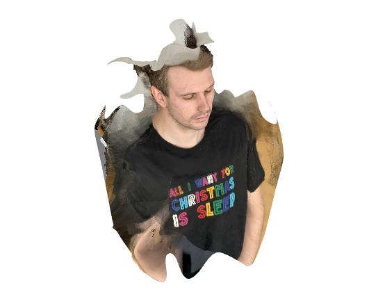I tried this a couple of more times with different photos but I was never able to create a 3D model of the whole head. I then decided to purchase 1 month of Autodesk Recap Pro. This allowed me to use 300 images on a single model.
WARNING: This could take some time.
Get Autodesk Recap ProHere is the outcome after beging able to upload 300 images.
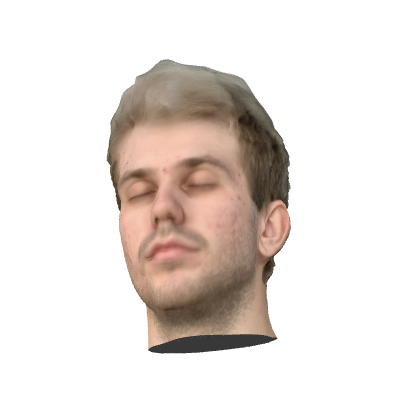I used the Detect and fix model issues tool to remove particles and fill holes.
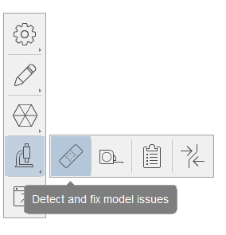Then I used the slice and fill tool to slice my model.
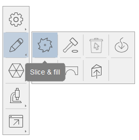 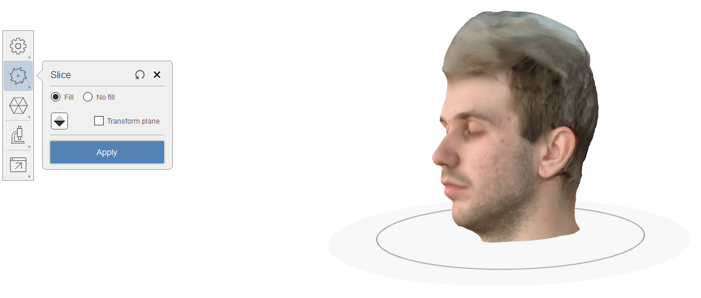After removing the particles, slicing the model and filling holes I still had a proble with the shape of the head.
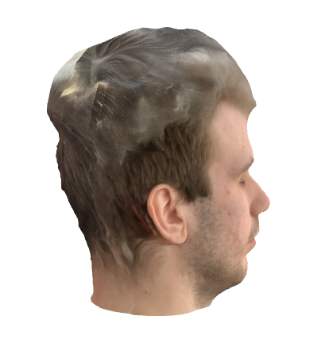In an attempt to fix the bulge on the head I used Autodesk Meshmixer.
Autodesk meshmixer is a fantastic free software for creating and manipulating 3D files for 3D printing. Whether you need to clean up a 3D scan, do some 3D printing or design an object, meshmixer can help.
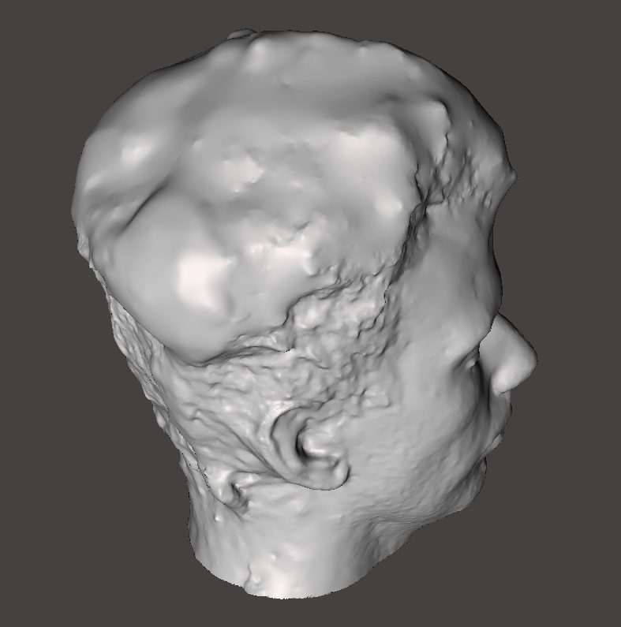I used multible tools to sculpt and smooth out the hair and other parts of the design.
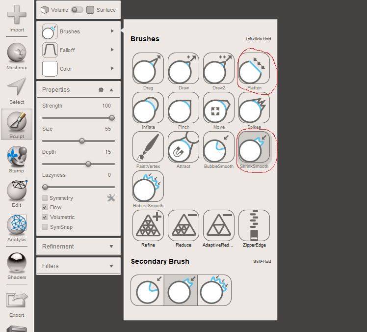Here you can see the resault.
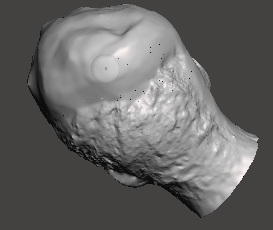Finally I made my model solid.
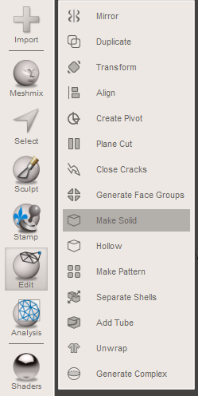Then to prep my model I opened it up in Cura, scaled it, added pillars and exported it to the 3D printer.
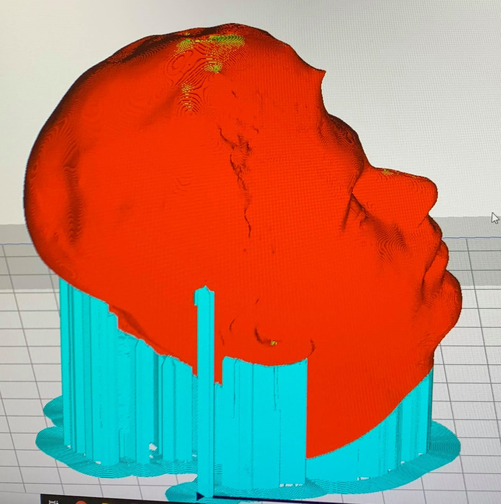I used the Ultimaker 3 Extended 3D printer.
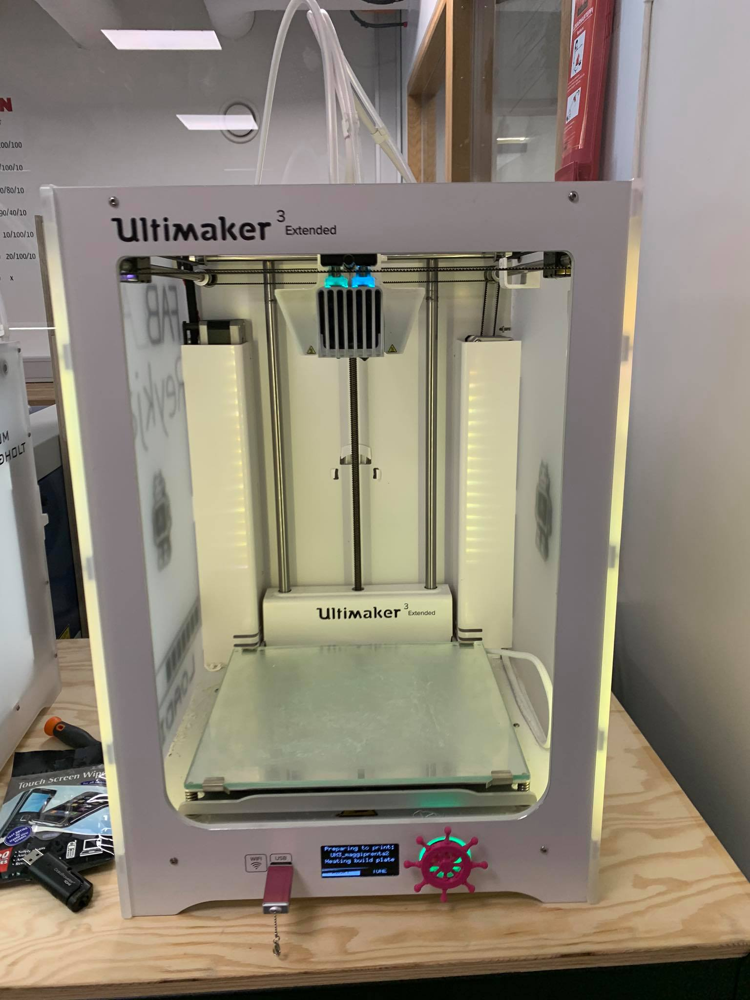After about 19 hours here is the printed 3D object.
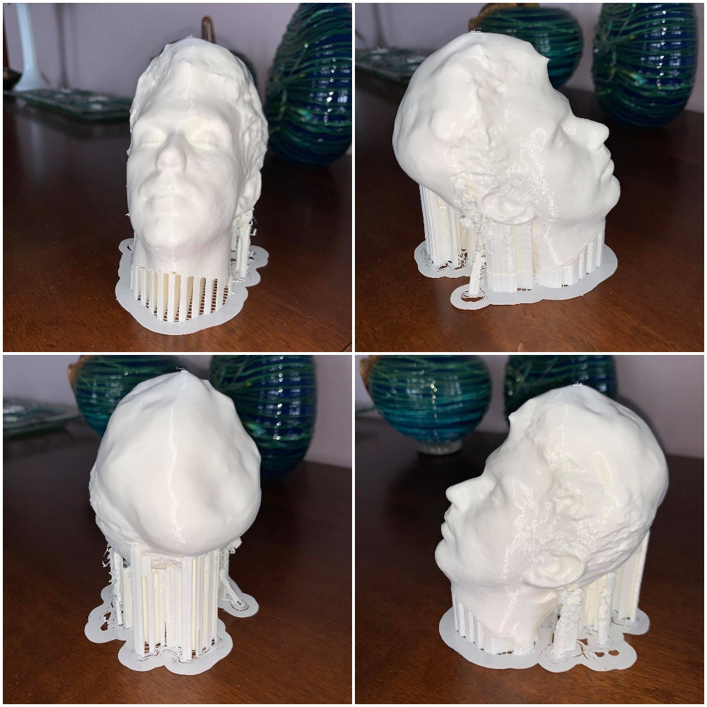I used my hands to get rid of the pillars and then sandpaper to smooth out all the rough parts of the object.
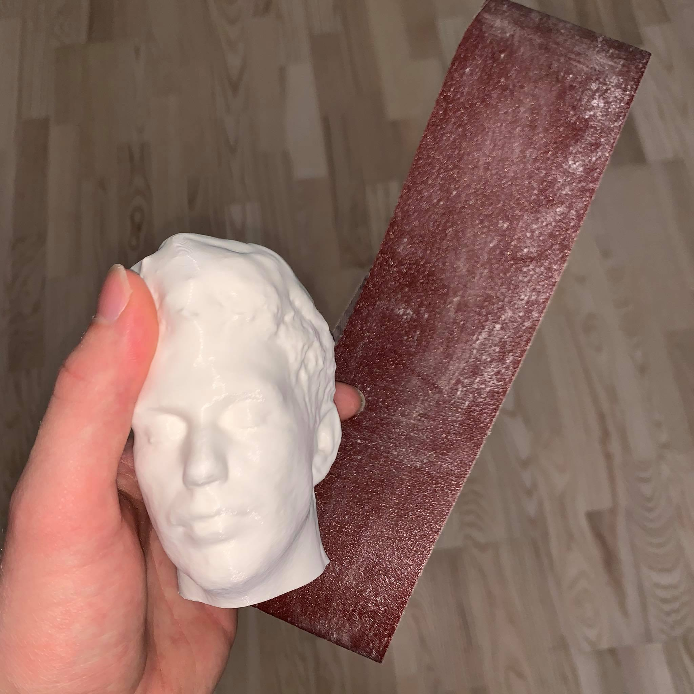Here is the final product.
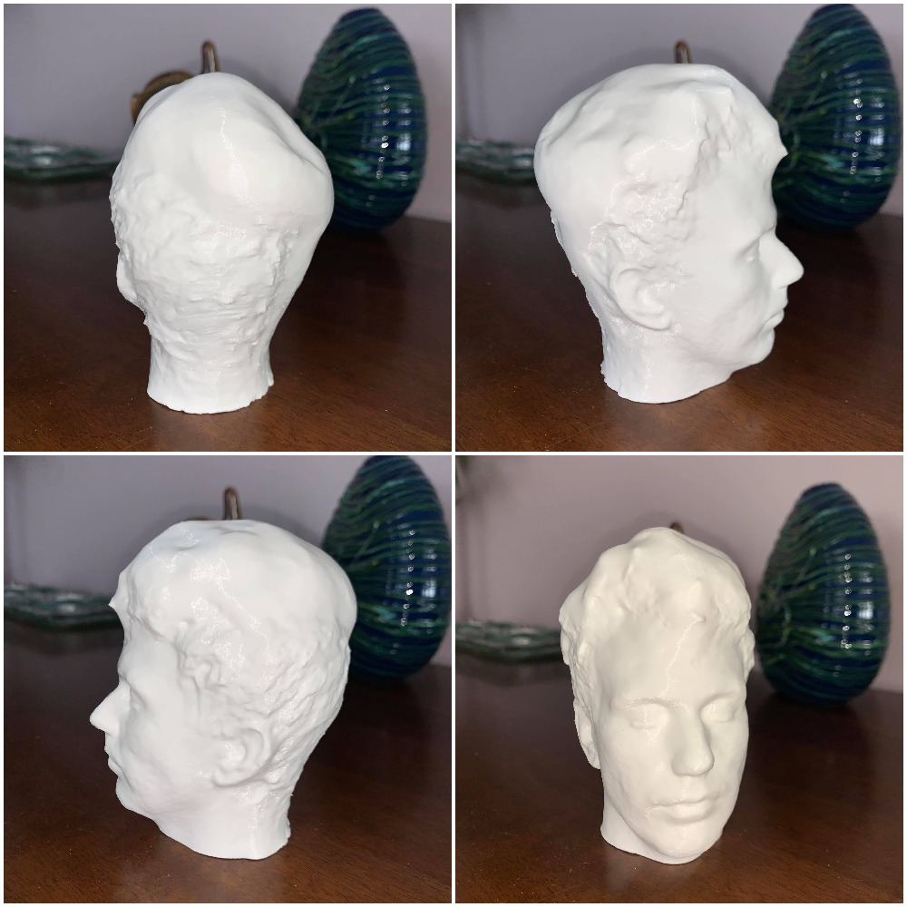It is really hard to 3D scan a face accurately. I thought the problem was that I didn't have enough images but the problem was really the quality of the images. A little glare on a surface can really mess up your model. After the completion of this project I recomend that people who want to attempt it think more about quality than quantity. About 40 good images of a head should be enough to get a good model.